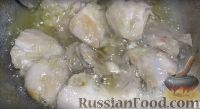

Подготавливаем все продукты для плова. Мясо нарезаем кусочками.

Лук режем кубиками, морковь - достаточно крупными брусочками.

В разогретом казане слегка обжариваем лук на растительном масле.
Добавляем мясо, обжариваем почти до готовности.

Засыпаем морковь, обжариваем. Солим, добавляем специи.

Рис хорошо промываем, засыпаем в казан, перемешиваем и заливаем кипятком, чтобы вода покрывала рис на 2-2,5 см. v Воды лучше не долить. Если в процессе готовки окажется, что воды мало, её спокойно можно добавить. А вот если воды будет много, рис гарантированно переварится.

Доводим до кипения, не накрывая крышкой. Пробуем на соль и если нужно досаливаем.

Как только закипит, добавляем целые головки чеснока, очищенные от верхней шелухи, и стручки острого перца. Уменьшаем огонь до минимума, накрываем крышкой и оставляем плов минут на 20. Через 20 минут проверяйте: если рис еще сырой, а воды уже нет - долейте немного горячей воды и снова накройте крышкой. Готовый рис не должен быть слишком мягким.

Выключаем огонь и даем плову постоять минут 15-20.

Традиционно к узбекскому плову готовят салат Ачучук (Ачик-Чучук или, иначе, Шакароб). Готовить его элементарно: нарезаем помидоры и лук, добавляем соль и черный перец. Масло в этот салат не добавляется.